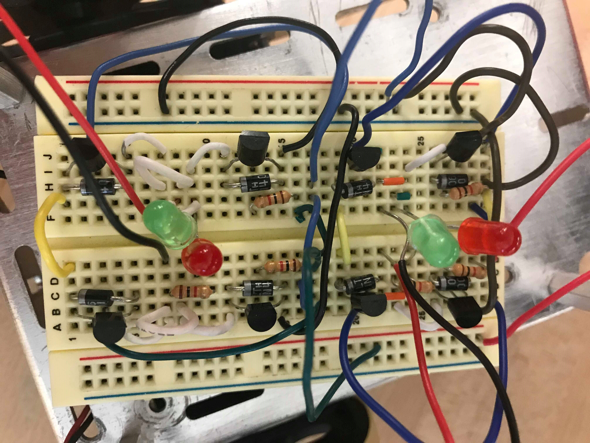

In my Mechatronics class, I was paired with two students with diverse backgrounds and industry experience to build an autonomous robot to compete in the annual Cube Craze competition. We used skills learned in class to build circuits and program microcontrollers in C. Our robot ultimately won the first round and lost the following two (in a close tie!).
The objective of the Cube Craze competition was to create a robot controlled by an Arduino Uno to clear as many cubes as possible from a starting zone into the opponent's in the span of one minute. The field was split into two different colored zones surrounded by a black border. At the start of each round, 10 cubes were placed in the middle third of each zone while the robots were placed at the back of their respective zone. Once the round began, no human interactions were allowed. The team with the lowest score - least number of cubes in their zone - at the end of the round won.
As a base for the robot body, we were provided a Boe-Bot Robot Kit. This consisted of a metal chassis, three servo motors, and wheels. We were able to "purchase" extra components as part of our material budget. When designing the mechanism for moving the cubes, we considered feasibility and error sensitivity. We moved forward with a shovel mechanism that would push the cubes around the field with an expansion feature to extend its reach. As per the competition rules, the initial robot dimensions could change during the round. The expansion feature is essentially a rack and pinion, however, rather than gears, we used the resistance between the plates to create linear motion from the rotary motion of the servos. This mechanism was lasercut from 0.25" acrylic. The rest of the body consisted of the battery, a breadboard, and an Arduino mounted on an elevated plate.
In addition to the mechanical components, we were also provided an array of sensors including a color sensor, QTIs, and ultrasonic transducers. To maintain simplicity, we only utilized the color sensor to navigate. Since the field was separated by three distinct colors, we were able to accurately detect changes in colors and respond accordingly. In addition, we wired two H-bridges to individually control the wheels on the robot on the breadboard.
Instead of using the built in Arduino software to code our robot, we used Atmel Studio to code in Pure C and imported it into the Arduino Uno. Since we had wired two separate H-bridges for each servo controling the wheels, we were able to move the robot forwards, backwards, and turning both left and right. This was done by turning pins on and off on the Arduino in our code. In addition, since the color sensor read different light frequencies to determine colors, we were able to record the initial zone color and calculate the frequency differences when it encountered a color change.
Our strategy for the competition was to automatically sweep the entire field multiple times. The algorithm outline was as follows:
Start Sequence
Move forward
Extend shovel
Record starting color
Color polling every 0.2 seconds
If the color detected is the opposing zone
Move backwards
Turn right 90 degrees
Move forward
Turn to left 90 degrees
Move forward
If the color detected is black
Turn left 120 degrees
Move forward
Turn right 30 degrees
Our robot's main strengths were its reliability, large reach, and speed. Something many other groups had issues with during competition was staying within the field borders. Since the field was elevated from the floor, it virtually impossible to return onto the field. Unlike other groups, we opted out of using QTIs in addition to the color sensor for locating. This allowed us to optimize and test our color sensor algorithm to ensure that it responded consistently and accurately. One of the main weaknesses was a lack of an offensive or defensive mechanism. Instead of creating a locating algorithm to sweep the board like we did, other groups chose to sabatoge the competing robot, thus leaving the field clear for their win.
During competition, we hit a few snags, mainly due to the code not working as we intended it to. While the color sensor still operated as tested, the algorithm we developed to sweep the board did not. Instead of sweeping across the board systematically as coded, the robot first turned twice and began moving forward. However, because we were consistently polling for color, the robot was generally able to reorient itself enough to sweep through the majority of the board. We believe that this may be due to differencees in lighting between our testing setup and the competition lighting.
Our first round went relatively smoothly, in spite of the movement issues discussed earlier. The opposing robot quickly drove off the field allowing us to easily collect cubes. In our second round, we were able to collect many cubes, but, our robot collided with the other and both flew off the field. This resulted in a rematch that eventually ended in a tiebreak where they counted the number of cubes that fell from the field. Unfortunatley, this resulted in a loss by one cube. Finally, due to our lack of defense mechanisms, the opponent's robot easily pushed our robot off the board, effectively ending the round.